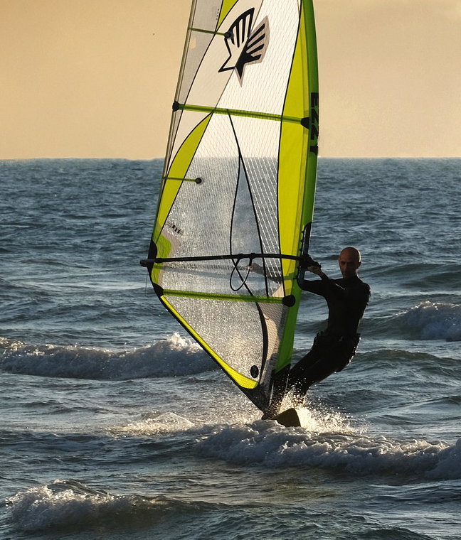
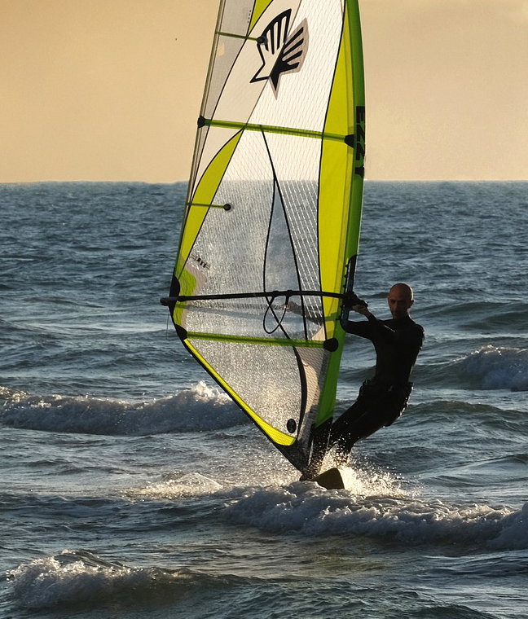
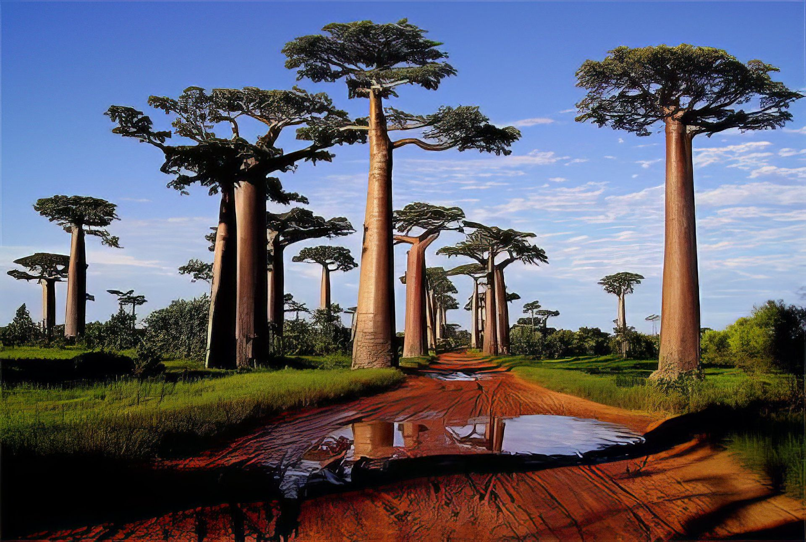
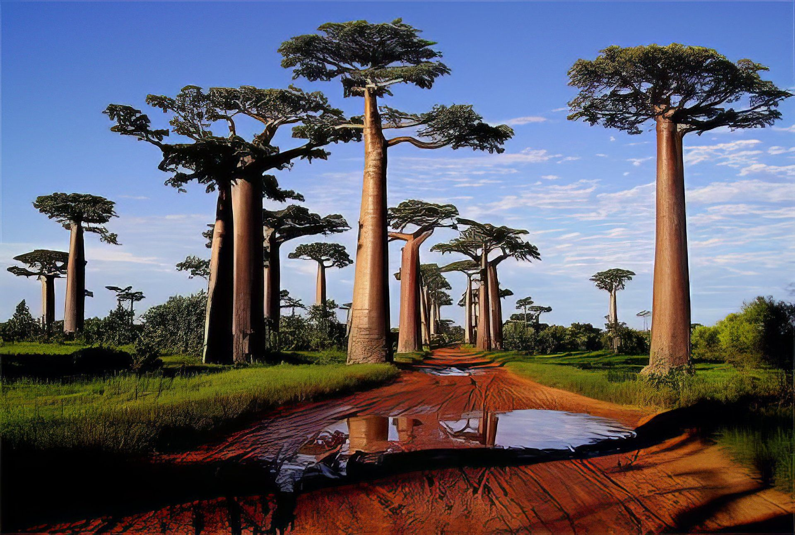

Nos Destinations Populaires
Antananarivo
Bienvenue à Antananarivo, ville aux douze collines et aux panoramas époustouflants. Cette capitale unique vous emmène dans un voyage entre passé et présent, avec ses palais royaux, ses marchés animés et ses quartiers emblématiques. Découvrez l'âme de Madagascar dans ses ruelles verdoyantes.
À partir de 666 AriaryBaie d'Antongil
La baie d'Antongil, plus grande baie de Madagascar, est un sanctuaire de biodiversité. Située dans le nord-est, elle est renommée pour l'observation des baleines à bosse de juillet à septembre. Entourée de forêts tropicales et plages de sable blanc, la baie offre une aventure naturelle inoubliable.
À partir de 69 AriaryParc National de l'Isalo
Le Parc National de l'Isalo est un paysage de grès sculpté rappelant des décors de western. Dans le sud-ouest de Madagascar, ce parc offre des canyons spectaculaires, des cascades et des bassins naturels, parfaits pour une pause après une randonnée.
À partir de 5465 AriaryÎle Sainte-Marie
Sur l'Île Sainte-Marie, vous découvrirez un petit coin de paradis figé dans le temps. Plages tranquilles, récifs de corail, et histoires de pirates offrent un cadre unique. Profitez de la migration des baleines pour un spectacle naturel rare.
À partir de 2656 Ariary 


 
